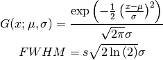
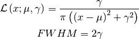
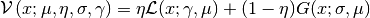
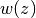
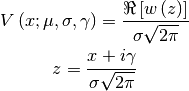

profiles – Implementation of lineshapes¶
The module profiles is a grouping of different lineshapes used in the fitting of hyperfine spectra. The classes create callable instances of the profile, with the parameters given as intuitive keywords, so the user doesn’t have to focus on the correct implementation of the formula. The different lineshapes included are:
Gaussian
Lorentzian
Voigt
- Extended Voigt, consisting of a combination of Gaussian, Lorentzian and
- Hyperbolic
- Irrational
Pseudo-Voigt
Note
The parameter amp is used as either the height of the peak or the area underneath the curve, depending on the boolean ampIsArea. This boolean can be supplied as a keyword to every profile. Standard behaviour is using the height as the amplitude instead of the area.
Usage example¶
For the correct syntax and use of the profiles, while also showcasing the difference between using the amplitude as an area or as peak height, is illustrated in the following codeblock. The resulting plot, so the difference can be seen, is also included.
import numpy as np
import matplotlib.pyplot as plt
import satlas.profiles as p
import seaborn
seaborn.set_style('ticks')
seaborn.set_palette('colorblind')
x = np.linspace(-6, 6, 1000)
fwhm = 1.0
g = p.Gaussian(fwhm=fwhm)
l = p.Lorentzian(fwhm=fwhm)
b = p.PseudoVoigt(fwhm=fwhm)
e = p.ExtendedVoigt(fwhm=fwhm)
v = p.Voigt(fwhm=fwhm)
prof = [g, l, b, e, v]
names = ['Gaussian', 'Lorentzian', 'PseudoVoigt',
'ExtendedVoigt', 'Voigt']
fig, ax = plt.subplots(nrows=2, ncols=1, sharex=True, sharey=True)
for lineshape, name in zip(prof, names):
ax[0].plot(x, lineshape(x), lw=2.0, label=name)
g = p.Gaussian(fwhm=fwhm, ampIsArea=True)
l = p.Lorentzian(fwhm=fwhm, ampIsArea=True)
b = p.PseudoVoigt(fwhm=fwhm, ampIsArea=True)
e = p.ExtendedVoigt(fwhm=fwhm, ampIsArea=True)
v = p.Voigt(fwhm=fwhm, ampIsArea=True)
prof = [g, l, b, e, v]
for lineshape, name in zip(prof, names):
ax[1].plot(x, lineshape(x), lw=2.0, label=name)
ax[1].legend(loc=0, fontsize=14)
ax[0].set_title('Amplitude is height', fontsize=20)
ax[1].set_title('Amplitude is area', fontsize=20)
seaborn.despine(ax=ax[1], offset=10, trim=True)
seaborn.despine(ax=ax[0], offset=10, trim=True, bottom=True)
plt.tight_layout()
plt.show()
(Source code, png, hires.png, pdf)
{kind=link}
{kind=link}

Code documentation¶
Module author: Wouter Gins <wouter.gins@fys.kuleuven.be>
Module author: Ruben de Groote <ruben.degroote@fys.kuleuven.be>
- class satlas.profiles.ExtendedVoigt(fwhm=None, mu=None, amp=None, **kwargs)[source]¶
A callable normalized extended Voigt profile.
Parameters: - fwhm (list of 2 floats) – Full Width At Half Maximum, defaults to 1, ordered as Gaussian and Lorentzian width.
- mu (float) – Location of the center, defaults to 0.
- amp (float) – Amplitude of the profile, defaults to 1.
- totalfwhm¶
float
Approximation of the total width, based on the underlying widths.
Returns: Callable instance, evaluates the extended Voigt profile in the arguments supplied. Return type: ExtendedVoigt
- class satlas.profiles.Gaussian(fwhm=None, mu=None, amp=None, **kwargs)[source]¶
A callable normalized Gaussian profile.
Parameters: - fwhm (float) – Full Width At Half Maximum, defaults to 1.
- mu (float) – Location of the center, defaults to 0.
- amp (float) – Amplitude of the profile, defaults to 1.
Returns: Callable instance, evaluates the Gaussian profile in the arguments supplied.
Return type: Gaussian
Note
The used formula is taken from the MathWorld webpage http://mathworld.wolfram.com/GaussianFunction.html:

- class satlas.profiles.HyperbolicSquared(fwhm=None, mu=None, amp=None, **kwargs)[source]¶
A callable normalized HyperbolicSquared profile.
Parameters: - fwhm (float) – Full Width At Half Maximum, defaults to 1.
- mu (float) – Location of the center, defaults to 0.
- amp (float) – Amplitude of the profile, defaults to 1.
Returns: Callable instance, evaluates the hyperbolic profile in the arguments supplied.
Return type: Hyperbolic
- class satlas.profiles.Irrational(fwhm=None, mu=None, amp=None, **kwargs)[source]¶
A callable normalized Irrational profile.
Parameters: - fwhm (float) – Full Width At Half Maximum, defaults to 1.
- mu (float) – Location of the center, defaults to 0.
- amp (float) – Amplitude of the profile, defaults to 1.
Returns: Callable instance, evaluates the irrational profile in the arguments supplied.
Return type: Irrational
- class satlas.profiles.Lorentzian(fwhm=None, mu=None, amp=None, **kwargs)[source]¶
A callable normalized Lorentzian profile.
Parameters: - fwhm (float) – Full Width At Half Maximum, defaults to 1.
- mu (float) – Location of the center, defaults to 0.
- amp (float) – Amplitude of the profile, defaults to 1.
Returns: Callable instance, evaluates the Lorentzian profile in the arguments supplied.
Return type: Lorentzian
Note
The formula used is taken from the MathWorld webpage http://mathworld.wolfram.com/LorentzianFunction.html:

- class satlas.profiles.PseudoVoigt(eta=None, fwhm=None, mu=None, amp=None, **kwargs)[source]¶
A callable normalized PseudoVoigt profile.
Parameters: - fwhm (float) – Full Width At Half Maximum, defaults to 1.
- mu (float) – Location of the center, defaults to 0.
- amp (float) – Amplitude of the profile, defaults to 1.
Returns: Callable instance, evaluates the pseudovoigt profile in the arguments supplied.
Return type: PseudoVoigt
Note
The formula used is taken from the webpage http://en.wikipedia.org/wiki/Voigt_profile#Pseudo-Voigt_Approximation, and the supplied FWHM is appropriately transformed for the Gaussian and Lorentzian lineshapes:

- class satlas.profiles.Voigt(fwhm=None, mu=None, amp=None, **kwargs)[source]¶
A callable normalized Voigt profile.
Parameters: - fwhm (list of 2 floats) – Full Width At Half Maximum of the components, defaults to 1. Ordered as Gaussian, then Lorentzian.
- mu (float) – Location of the center, defaults to 0.
- amp (float) – Amplitude of the profile, defaults to 1.
- totalfwhm¶
float
Approximation of the width based on the underlying widths.
Returns: Callable instance, evaluates the Voigt profile in the arguments supplied. Return type: Voigt Note
The formula used is taken from the Wikipedia webpage http://en.wikipedia.org/wiki/Voigt_profile, with  the Faddeeva function, and the values supplied as FWHM are appropriately transformed to
 and
and  :
: